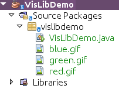
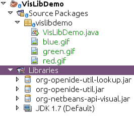
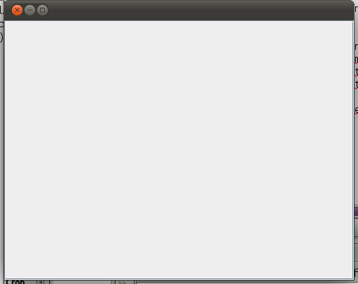
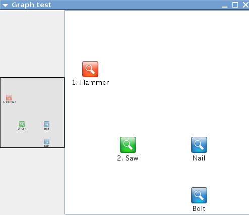

Apache NetBeans
Apache NetBeansLatest release
NetBeans Visual Library Tutorial for Standard Java SE Applications
| This tutorial needs a review. You can edit it in GitHub following these contribution guidelines. |
In this tutorial, you will learn how to use the main features provided by the NetBeans Visual Library API.
Also, you will use 3 icons in the tutorial. You can right-click them here and save them locally, then copy them to the application’s location, after you create the application later in this tutorial. Here are the 3 icons:

Setting Up the Application
In this section, we use a wizard to create a Java application.
-
Choose File > New Project (Ctrl+Shift+N). Under Categories, select Java. Under Projects, select Java Application. Click Next.
1.
In the Name and Location panel, type VisLibDemo in the Project Name field:

Click Finish. The IDE creates the VisLibDemo project.
-
Add the three images above to the main package. You should now see this:

Adding the Libraries
In this section, we add the NetBeans Platform JARs you need, to be able to work with the Visual Library.
-
Right-click the Libraries node and choose "Add JAR/Folder".
-
Browse to the installation directory of NetBeans IDE.
-
In
platform/lib, chooseorg-openide-util.jar.
-
In
platform/lib, chooseorg-openide-util-lookup.jar.
-
In
platform/modules, chooseorg-netbeans-api-visual.jar.
You now have the only NetBeans Platform JARs you will need:

Creating the Container
In this section, we create the container that will hold the Scene from the Visual Library.
-
Define
VisLibDemo.javato contain aJFramewith aJScrollPaneas follows:
public class VisLibDemo extends JPanel {
public VisLibDemo() {
initComponents();
}
private void initComponents() {
setLayout(new BorderLayout());
JScrollPane scrollPane = new JScrollPane();
add(scrollPane, BorderLayout.CENTER);
}
public static void main(String args[]) {
EventQueue.invokeLater(new Runnable() {
@Override
public void run() {
JFrame frame = new JFrame();
frame.setMinimumSize(new Dimension(500, 400));
frame.setDefaultCloseOperation(JFrame.EXIT_ON_CLOSE);
frame.setContentPane(new VisLibDemo());
frame.pack();
frame.setVisible(true);
}
});
}
}-
Run the application and you should see a simple JFrame:

Now that you have a JFrame , a JPanel , and a JScrollPane , you’re ready to create a scene!
Creating the Widgets
In this section, we create a separate class containing our scene. We then hook it into our JPanel .
-
Create a new class called
GraphSceneImpl.java.
-
Let it extend GraphScene<String, String>.
-
Use the lightbulb at the side of the IDE to add import statements and abstract methods. You should now see this:
package vislibdemo;
import org.netbeans.api.visual.graph.GraphScene;
import org.netbeans.api.visual.widget.Widget;
public class GraphSceneImpl extends GraphScene<String, String> {
@Override
protected Widget attachNodeWidget(String arg0) {
throw new UnsupportedOperationException("Not supported yet.");
}
@Override
protected Widget attachEdgeWidget(String arg0) {
throw new UnsupportedOperationException("Not supported yet.");
}
@Override
protected void attachEdgeSourceAnchor(String arg0, String arg1, String arg2) {
throw new UnsupportedOperationException("Not supported yet.");
}
@Override
protected void attachEdgeTargetAnchor(String arg0, String arg1, String arg2) {
throw new UnsupportedOperationException("Not supported yet.");
}
}-
We’ll be using three
LayerWidgets, which are likeJGlassPanesin Swing. Declare them at the top of the class:
private LayerWidget mainLayer;
private LayerWidget connectionLayer;
private LayerWidget interactionLayer;-
Create a constructor, initialize your
LayerWidgetsand add them to theScene:
public GraphSceneImpl() {
mainLayer = new LayerWidget(this);
connectionLayer = new LayerWidget(this);
interactionLayer = new LayerWidget(this);
addChild(mainLayer);
addChild(connectionLayer);
addChild(interactionLayer);
}-
Next, define what will happen when a new Widget is created:
@Override
protected Widget attachNodeWidget(String arg) {
IconNodeWidget widget = new IconNodeWidget(this);
if (arg.startsWith("1")) {
widget.setImage(ImageUtilities.loadImage("vislibdemo/red.gif"));
} else if (arg.startsWith("2")) {
widget.setImage(ImageUtilities.loadImage("vislibdemo/green.gif"));
} else {
widget.setImage(ImageUtilities.loadImage("vislibdemo/blue.gif"));
}
widget.setLabel(arg);
mainLayer.addChild(widget);
return widget;
}The above is triggered whenever addNode is called on the scene.
-
At the end of the constructor, trigger the method above 4 times:
Widget w1 = addNode("1. Hammer");
w1.setPreferredLocation(new Point(10, 100));
Widget w2 = addNode("2. Saw");
w2.setPreferredLocation(new Point(100, 250));
Widget w3 = addNode("Nail");
w3.setPreferredLocation(new Point(250, 250));
Widget w4 = addNode("Bolt");
w4.setPreferredLocation(new Point(250, 350));Above, you have created four widgets, you have passed in a string, and you have set the widget’s position. Now, the attachNodeWidget method is triggered, which you defined in the previous step. The arg parameter in the attachNodeWidget is the string you passed to addNode . Therefore, the string will set the label of the widget. Then the widget is added to the mainLayer .
-
Back in the
Main.javaclass, add the lines in bold to theinitComponentsmethod:
private void initComponents() {
//Set the layout:
setLayout(new BorderLayout());
//Create a JScrollPane:
JScrollPane scrollPane = new JScrollPane();
//Add the JScrollPane to the JPanel:
add(scrollPane, BorderLayout.CENTER);
*//Create the GraphSceneImpl:
GraphScene scene = new GraphSceneImpl();
//Add it to the JScrollPane:
scrollPane.setViewportView(scene.createView());
//Add the SatellitView to the scene:
add(scene.createSatelliteView(), BorderLayout.WEST);*
}-
Run the application and you should see this:

Now that you have a scene with some widgets, we can begin integrating some actions!
Enabling the Actions
In this section, we enable actions on the widgets we created previously.
-
Change the
attachNodeWidgetby adding the lines in bold below:
@Override
protected Widget attachNodeWidget(String arg) {
IconNodeWidget widget = new IconNodeWidget(this);
if (arg.startsWith("1")) {
widget.setImage(ImageUtilities.loadImage("vislibdemo/red.gif"));
} else if (arg.startsWith("2")) {
widget.setImage(ImageUtilities.loadImage("vislibdemo/green.gif"));
} else {
widget.setImage(ImageUtilities.loadImage("vislibdemo/blue.gif"));
}
*widget.getActions().addAction(
ActionFactory.createAlignWithMoveAction(
mainLayer, interactionLayer,
ActionFactory.createDefaultAlignWithMoveDecorator()));*
widget.setLabel(arg);
mainLayer.addChild(widget);
return widget;
}-
Run the application. Drag a widget around and notice that alignment markers appear that help the user position a widget in relation to other widgets:
-
Change the
GraphSceneImplclass by adding the line below to the end of the constructor:
getActions().addAction(ActionFactory.createZoomAction());-
Run the application. Scroll the middle mousebutton, or do whatever your operating system requires for "zooming", and notice that the whole scene increases/decreases in size.
-
Add a custom
ConnectProviderto the end of theGraphSceneImpl:
private class MyConnectProvider implements ConnectProvider {
public boolean isSourceWidget(Widget source) {
return source instanceof IconNodeWidget && source != null? true : false;
}
public ConnectorState isTargetWidget(Widget src, Widget trg) {
return src != trg && trg instanceof IconNodeWidget ? ConnectorState.ACCEPT : ConnectorState.REJECT;
}
public boolean hasCustomTargetWidgetResolver(Scene arg0) {
return false;
}
public Widget resolveTargetWidget(Scene arg0, Point arg1) {
return null;
}
public void createConnection(Widget source, Widget target) {
ConnectionWidget conn = new ConnectionWidget(GraphSceneImpl.this);
conn.setTargetAnchorShape(AnchorShape.TRIANGLE_FILLED);
conn.setTargetAnchor(AnchorFactory.createRectangularAnchor(target));
conn.setSourceAnchor(AnchorFactory.createRectangularAnchor(source));
connectionLayer.addChild(conn);
}
}Hook the custom ConnectProvider into the widget as follows:
@Override
protected Widget attachNodeWidget(String arg0) {
IconNodeWidget widget = new IconNodeWidget(this);
if (arg0.startsWith("1")) {
widget.setImage(ImageUtilities.loadImage("vislibdemo/red.gif"));
} else if (arg0.startsWith("2")) {
widget.setImage(ImageUtilities.loadImage("vislibdemo/green.gif"));
} else {
widget.setImage(ImageUtilities.loadImage("vislibdemo/blue.gif"));
}
*widget.getActions().addAction(
ActionFactory.createExtendedConnectAction(
connectionLayer, new MyConnectProvider()));*
widget.getActions().addAction(
ActionFactory.createAlignWithMoveAction(
mainLayer, interactionLayer,
ActionFactory.createDefaultAlignWithMoveDecorator()));
widget.setLabel(arg0);
mainLayer.addChild(widget);
return widget;
}-
Run the application, select a widget, hold down the Ctrl key, and then drag the mouse to another widget. You should then be able to connect widgets to each other, like this:

Now that you have a basic idea of the features that the Visual Library API provides, see the section called "NetBeans APIs for Visualizing Data" on the NetBeans Platform Learning Trail.